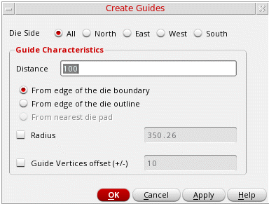
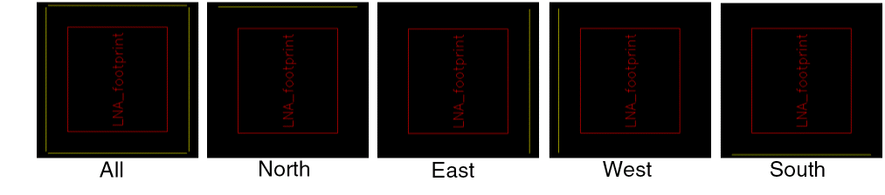
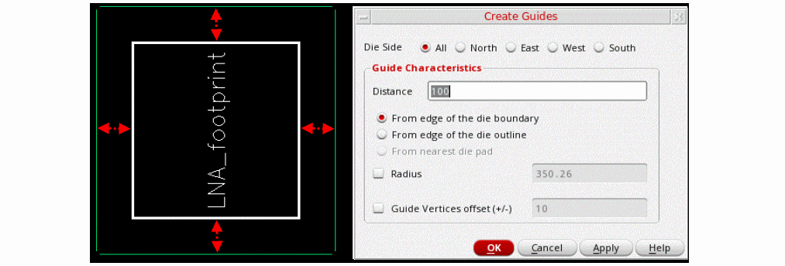
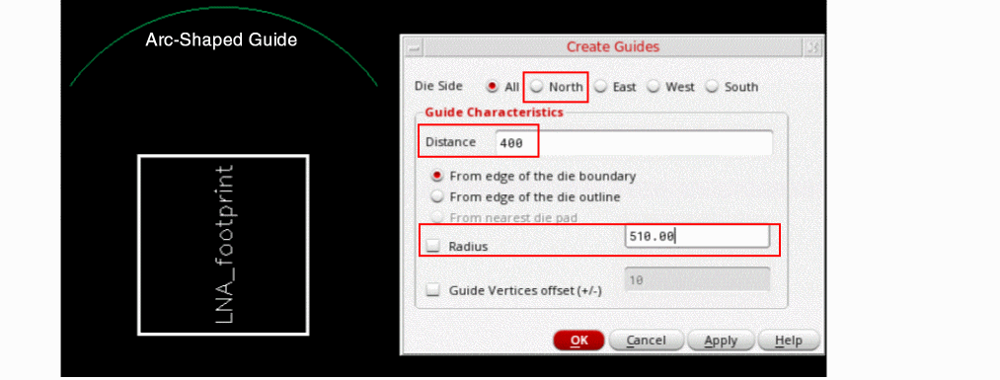
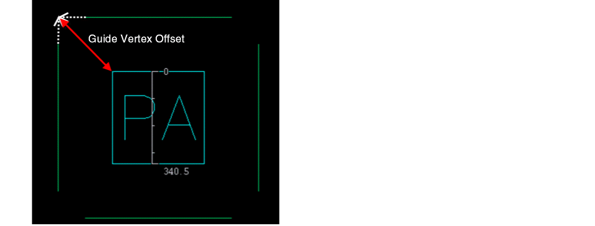

Creating a Guide
- Select the die for which you would want to create a guide.
-
Choose Module — Guide — Create to open the Create Guides form.
The Create Guides form is not displayed when: -
Select a Die Side value to specify the side along which one or more guides are to be created: All, North, East, West, or South.
The default value is All. Line-shaped guides are created on all four sides of the die. The following images depict die sides.
 - Specify the distance of the guide in the Distance field and the reference from which the distance is to be calculated.
-
Select From edge to the die boundary to specify that the distance is to be calculate from the PR boundary of the die. For example, if Die Side is set to North, the distance is calculated from top edge of the PR boundary of the die. This option is selected by default. Use this option to ignore all text labels outside the die PR boundary while creating guides.
 - Select From edge to the die outline to specify that the distance is to be calculated from the die outline that includes all objects lying outside the PR boundary of the die, for example the labels located outside the die PR boundary. If the Die Side is set to North, the distance is calculated from the top of the die outline, which could be larger than the die PR boundary.
-
(Optional) Select and specify a Radius value to create arc-shaped guides. The curvature of the guide is calculated based on the specified radius.
 -
(Optional) Select Guide Vertices offset and specify the distance of the diagonal line drawn from the two vertexes of the guide to the center of the die.
 -
Click Apply or OK to create the guide.
You can now create bond wires with their endpoints on the guides.
Related Topics
Return to top